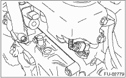

1. Release the fuel pressure. 
2. Disconnect the ground cable from the battery.

3. Open the fuel filler flap lid, and remove the fuel filler cap.
4. Remove the air intake duct, air cleaner case and air intake chamber.
5. Remove the generator.
6. Remove the power steering pump and reservoir tank.
(1) Remove the bolts which hold the power steering pipes onto the fuel pipe protector RH.
NOTE:
Do not disconnect the power steering hose.
(2) Remove the installation bolt installing the power steering pump bracket.

(3) Disconnect connector (A) from the power steering pressure switch.

(4) Remove the reservoir tank from the bracket by pulling it upward.

(5) Place the power steering pump on the right side wheel apron.
7. Disconnect the engine coolant hoses (A) from throttle body.

8. Disconnect the brake booster hose (A).

9. Disconnect the PCV hose (A) from intake manifold.
10. Disconnect the engine harness connectors (B) from bulkhead harness connectors.

11. Remove the connector from front oxygen (A/F) sensor and rear oxygen sensor.
12. Disconnect the connectors from the engine coolant temperature sensor.

13. Disconnect the connector from crankshaft position sensor.

14. Disconnect the connector from the oil pressure switch (A).

15. Disconnect the connector from camshaft position sensor.

16. Disconnect the oil flow control solenoid valve connector.
17. Disconnect the connector from ignition coil.

18. Remove the EGR pipe.

19. Remove the secondary air pipe.
20. Disconnect the knock sensor connector.
21. Disconnect the fuel delivery hose (A) and evaporation hose (B) from the fuel pipe.
CAUTION:
• Be careful not to spill fuel.
• Catch the fuel from hoses using a container or cloth.

22. Remove the bolts which secure intake manifold to cylinder head.

23. Remove the intake manifold.